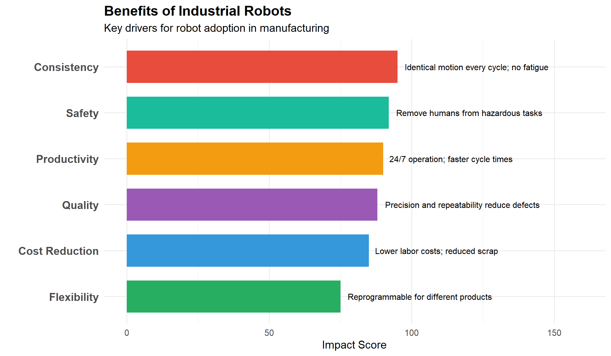
8 Industrial Robotics
8.1 Learning Objectives
After completing this chapter, you will be able to:
- Define industrial robots and explain their role in modern manufacturing
- Identify the main types of robot configurations and their applications
- Describe robot specifications including payload, reach, repeatability, and speed
- Explain the components of a robotic system (manipulator, controller, teach pendant, end effector)
- Understand robot coordinate systems and motion types
- Identify common robot applications in automotive, food, and defense industries
- Apply robot safety standards and safeguarding methods
- Describe collaborative robot (cobot) technology and applications
- Understand basic robot programming concepts
8.2 Introduction to Industrial Robotics
An industrial robot is defined by ISO 8373 as “an automatically controlled, reprogrammable, multipurpose manipulator, programmable in three or more axes, which can be either fixed in place or mobile for use in industrial automation applications.”
8.2.1 Why Use Robots?
8.2.2 Robot Market Growth
`geom_smooth()` using formula = 'y ~ x'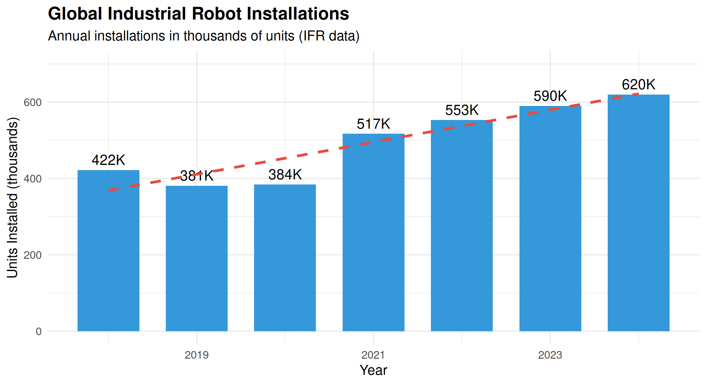
8.2.3 Industries Using Robots
| Industry | Market Share (%) | Key Applications | Growth Trend |
|---|---|---|---|
| Automotive | 30 | Welding, painting, assembly, material handling | Stable |
| Electrical/Electronics | 25 | Assembly, testing, packaging, dispensing | High |
| Metal & Machinery | 12 | Machine tending, welding, cutting | Moderate |
| Food & Beverage | 8 | Palletizing, packaging, pick-and-place | High |
| Plastics & Chemicals | 5 | Injection molding, packaging, assembly | Moderate |
| Aerospace/Defense | 4 | Drilling, fastening, inspection, composite layup | High |
8.3 Robot Configurations
Industrial robots come in various mechanical configurations, each suited to different applications.
8.3.1 Common Robot Types
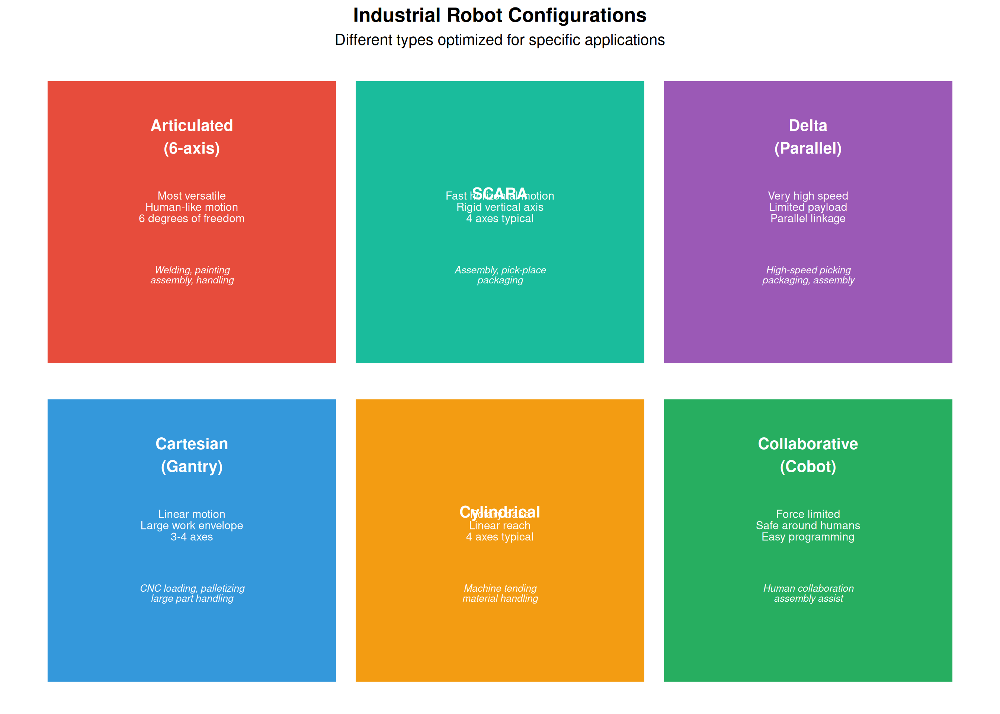
8.3.2 Detailed Configuration Comparison
| Configuration | Axes | Payload Range | Reach | Repeatability | Speed | Cost | Best Applications |
|---|---|---|---|---|---|---|---|
| 6-Axis Articulated | 6 | 3-2300 kg | 0.5-4 m | ±0.02-0.1 mm | Moderate-Fast | $$-$$$$ | Complex 3D tasks, maximum flexibility |
| SCARA | 4 | 1-20 kg | 0.2-1.2 m | ±0.01-0.05 mm | Very Fast | $$ | Fast assembly, pick-place, screw driving |
| Delta/Parallel | 3-4 | 0.5-12 kg | 0.5-1.5 m | ±0.05-0.1 mm | Extremely Fast | $$$ | High-speed picking, packaging lines |
| Cartesian/Gantry | 3-6 | 5-1000+ kg | Custom (meters) | ±0.05-0.5 mm | Moderate | $-$$$$ | Large work areas, heavy loads, simple paths |
8.3.3 Degrees of Freedom
Warning: Using `size` aesthetic for lines was deprecated in ggplot2 3.4.0.
ℹ Please use `linewidth` instead.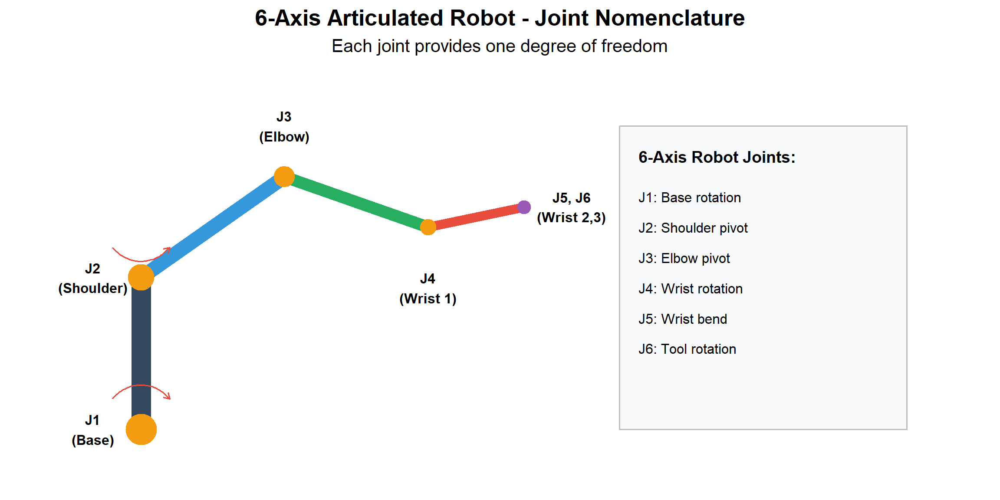
8.4 Robot Specifications
Understanding robot specifications is essential for proper selection and application.
8.4.1 Key Specifications
| Specification | Definition | Typical_Values | Importance |
|---|---|---|---|
| Payload | Maximum mass the robot can handle at full speed | 3-2300 kg (varies widely by type) | Must exceed part + gripper + safety factor |
| Reach | Maximum distance from base to tool center point | 500-4000 mm for articulated robots | Must cover all required work positions |
| Repeatability | Ability to return to same position repeatedly | ±0.01 to ±0.1 mm | Critical for precision assembly; welding |
| Accuracy | Ability to reach a commanded position exactly | ±0.1 to ±1.0 mm | Important for offline programming |
| Maximum Speed | Maximum velocity at tool center point or joint speeds | 1-12 m/s TCP; 100-500°/s joint | Affects cycle time; may be derated with payload |
| Degrees of Freedom | Number of independent axes of motion | 4-7 axes | More axes = more flexibility |
| Mounting | How robot is installed (floor, ceiling, wall, angle) | Floor (most common), ceiling, wall, shelf | Affects work envelope and floor space |
| IP Rating | Ingress Protection rating for dust/water resistance | IP40 (standard) to IP67 (harsh environments) | Required for foundry, food, wash-down applications |
8.4.2 Work Envelope
The work envelope (or workspace) is the three-dimensional space the robot can reach.
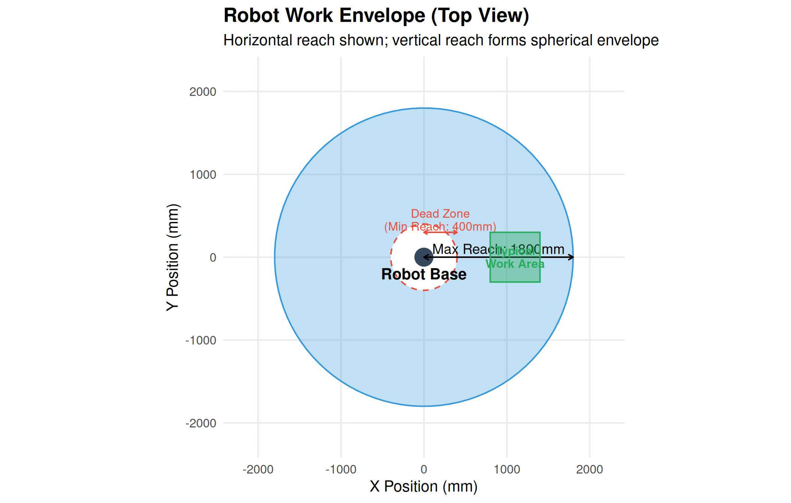
8.4.3 Payload Considerations
# Payload Calculation Example
robot_max_payload <- 10 # kg
gripper_weight <- 2.5 # kg
part_weight <- 5.0 # kg
safety_factor <- 1.2 # 20% safety margin
total_load <- gripper_weight + part_weight
required_capacity <- total_load * safety_factor
available_capacity <- robot_max_payload - gripper_weight
cat("Payload Analysis:\n")Payload Analysis:cat("─────────────────────────────\n")─────────────────────────────cat("Robot maximum payload:", robot_max_payload, "kg\n")Robot maximum payload: 10 kgcat("Gripper weight:", gripper_weight, "kg\n")Gripper weight: 2.5 kgcat("Part weight:", part_weight, "kg\n")Part weight: 5 kgcat("Total load:", total_load, "kg\n")Total load: 7.5 kgcat("With safety factor (", safety_factor, "x):", required_capacity, "kg\n")With safety factor ( 1.2 x): 9 kgcat("─────────────────────────────\n")─────────────────────────────cat("Available capacity for part:", available_capacity, "kg\n")Available capacity for part: 7.5 kgif(required_capacity <= robot_max_payload) {
cat("Result: ACCEPTABLE - Robot can handle this load\n")
} else {
cat("Result: EXCEEDED - Select larger robot or lighter gripper\n")
}Result: ACCEPTABLE - Robot can handle this load# Note about moment load
cat("\nNote: Also verify moment load (payload × distance from flange)\n")
Note: Also verify moment load (payload × distance from flange)cat("Moment at wrist:", part_weight, "kg ×", 0.3, "m =", part_weight * 0.3, "kg·m\n")Moment at wrist: 5 kg × 0.3 m = 1.5 kg·m8.4.4 Repeatability vs Accuracy
Warning in geom_point(aes(x = 0, y = 0), color = "red", size = 4, shape = 3, : All aesthetics have length 1, but the data has 90 rows.
ℹ Please consider using `annotate()` or provide this layer with data containing
a single row.Warning in geom_circle(aes(x0 = 0, y0 = 0, r = 0.05), inherit.aes = FALSE, : All aesthetics have length 1, but the data has 90 rows.
ℹ Please consider using `annotate()` or provide this layer with data containing
a single row.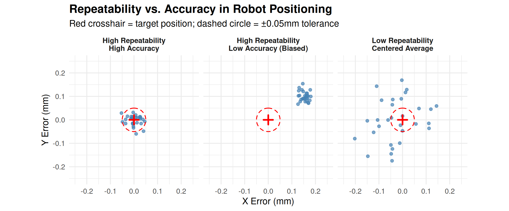
Understanding the Difference
Repeatability: - Ability to return to the SAME taught position - More important for most applications - Quoted spec (e.g., ±0.05mm) is typically 3σ - Achieved through consistent mechanical design and servo control
Accuracy: - Ability to reach a COMMANDED position - Important for offline programming - Affected by mechanical tolerances, deflection, calibration - Can be improved through calibration
Why Repeatability Matters More: In most applications, the robot is taught positions by jogging to them. As long as it returns to those positions consistently (repeatability), accuracy doesn’t matter. Accuracy only matters when positions are calculated (offline programming) rather than taught.8.5 Robot System Components
A complete robotic system consists of several integrated components.
8.5.1 System Architecture
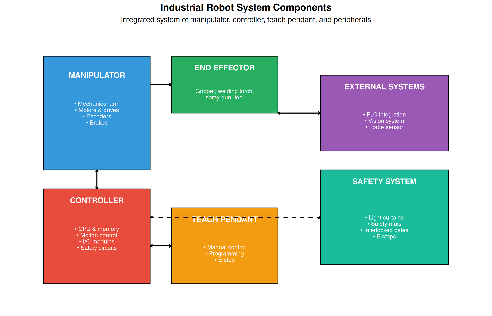
8.5.2 End Effectors (EOAT)
End of Arm Tooling (EOAT) is the device attached to the robot’s wrist to interact with parts.
| EOAT Type | Operating Principle | Applications | Key Considerations |
|---|---|---|---|
| Mechanical Gripper | Fingers actuated by pneumatic, electric, or hydraulic | General part handling; assembly | Part geometry; grip force; cycle time |
| Vacuum Gripper | Suction cups powered by venturi or vacuum pump | Flat surfaces; sheet material; boxes | Surface porosity; part weight; seal |
| Magnetic Gripper | Electromagnetic or permanent magnet | Ferrous metal parts; steel sheets | Part material; residual magnetism |
| Welding Torch | MIG, TIG, spot welding equipment | Automotive body, frames, components | Process parameters; wire feed; shielding |
| Spray Gun | Paint, adhesive, sealant dispensing | Automotive painting; sealing | Pattern; coverage; waste |
| Deburring Tool | Rotary tool for edge finishing | Casting, machining finishing | Speed; pressure; consistency |
| Force/Torque Sensor | Measures forces and torques at tool | Assembly; polishing; insertion | Sensitivity; overload protection |
| Vision Camera | 2D or 3D imaging for guidance | Part location; inspection; guidance | Resolution; lighting; processing speed |
8.5.3 Gripper Selection Example
# Gripper Force Calculation
part_mass <- 3.0 # kg
acceleration <- 15 # m/s² (robot acceleration)
gravity <- 9.81 # m/s²
safety_factor <- 2.0 # Minimum safety factor
friction_coefficient <- 0.3 # Steel on rubber
# Calculate forces
weight_force <- part_mass * gravity
inertia_force <- part_mass * acceleration
total_force <- sqrt(weight_force^2 + inertia_force^2)
# Required grip force (friction gripper)
required_grip <- total_force / friction_coefficient * safety_factor
cat("Gripper Force Calculation:\n")Gripper Force Calculation:cat("─────────────────────────────\n")─────────────────────────────cat("Part mass:", part_mass, "kg\n")Part mass: 3 kgcat("Weight force:", round(weight_force, 1), "N\n")Weight force: 29.4 Ncat("Inertia force:", round(inertia_force, 1), "N\n")Inertia force: 45 Ncat("Combined force:", round(total_force, 1), "N\n")Combined force: 53.8 Ncat("Friction coefficient:", friction_coefficient, "\n")Friction coefficient: 0.3 cat("Safety factor:", safety_factor, "\n")Safety factor: 2 cat("─────────────────────────────\n")─────────────────────────────cat("Required grip force:", round(required_grip, 1), "N\n")Required grip force: 358.5 Ncat("\nSelect gripper with grip force ≥", ceiling(required_grip/10)*10, "N\n")
Select gripper with grip force ≥ 360 N8.6 Coordinate Systems and Motion
Understanding coordinate systems is essential for robot programming.
8.6.1 Coordinate Frames
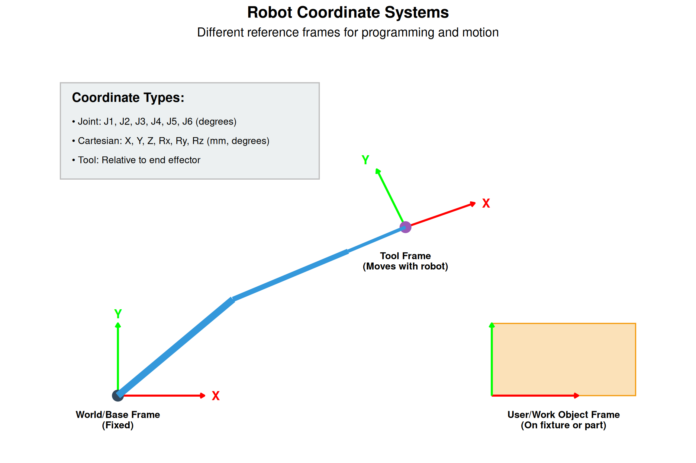
8.6.2 Motion Types
| Motion Type | Path Characteristic | Speed Control | When to Use | Cycle Time |
|---|---|---|---|---|
| Joint Move (MoveJ) | Unpredictable path; each joint moves at constant speed | Joint velocity (% or deg/s) | Fast point-to-point; collision-free space; approach moves | Fastest |
| Linear Move (MoveL) | Straight line from start to end; TCP follows linear path | TCP velocity (mm/s) | Process paths (welding, sealing); precise positioning | Moderate |
| Circular Move (MoveC) | Arc or circle; defined by start, via, and end points | TCP velocity (mm/s) | Arc welding; edge following; contoured surfaces | Slowest |
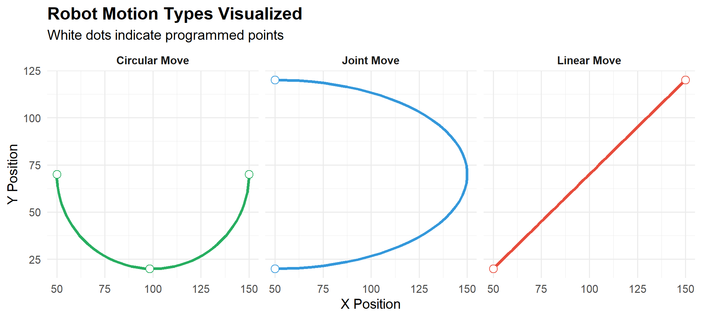
8.7 Robot Applications
8.7.1 Automotive Applications
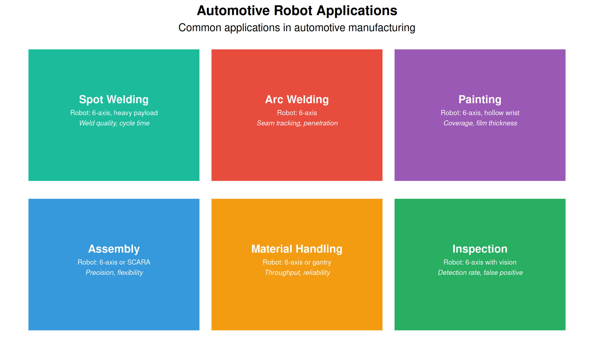
8.7.2 Food & Beverage Applications
| Application | Description | Robot Type | Special Requirements |
|---|---|---|---|
| Palletizing | Stack cases/bags onto pallets in patterns | 4-axis palletizer, 6-axis | IP65+, washdown, food-safe lubricants |
| Case Packing | Load products into cases/cartons | Delta, SCARA, 6-axis | High speed, gentle handling |
| Pick and Place | Transfer products between conveyors/stations | Delta (high speed), SCARA | Extremely fast cycles, hygienic design |
| Cutting/Portioning | Protein portioning, cake cutting | 6-axis with vision | Precise cutting, washdown capable |
| Decorating | Applying icing, toppings, decorations | 6-axis, delta | Food-grade materials, precise dispensing |
| Quality Inspection | Vision-based defect detection, grading | 6-axis with vision | Hygienic design, reliable detection |
8.7.3 Aerospace/Defense Applications
| Application | Description | Accuracy Required | Challenges |
|---|---|---|---|
| Drilling & Fastening | Precision hole drilling; rivet/bolt installation | ±0.05mm position | Drill normal to curved surfaces; chip management |
| Composite Layup | Automated fiber placement (AFP); tape laying | ±0.25mm fiber placement | Complex contours; material handling |
| NDT/Inspection | Ultrasonic, X-ray, visual inspection of structures | Full coverage | Large part access; data management |
| Surface Treatment | Painting, coating, surface prep for bonding | Consistent thickness | Large envelopes; environmental control |
| Assembly | Large structure assembly; wing-to-fuselage | ±0.5mm | Heavy payloads; coordination of multiple robots |
8.8 Robot Safety
Robot safety is critical to protect workers from potential hazards.
8.8.1 Hazard Categories
| Hazard | Description | Risk_Factors | Mitigation |
|---|---|---|---|
| Impact | Robot strikes person with arm or tooling | Speed, mass, sharp edges, unexpected motion | Guarding, reduced speed zones, sensors |
| Crushing | Person caught between robot and fixed object | Limited escape space, high forces | Minimum clearances, presence detection |
| Trapping | Body part caught in articulating joints or mechanisms | Pinch points at joints, insufficient clearance | Joint covers, clearance design |
| Ejection | Part or tool flies off due to grip failure or breakage | Grip force, centrifugal force, tool condition | Grip verification, part detection, enclosure |
| Other | Electrical, thermal, noise, radiation hazards | Voltage, heat, welding arc, laser | Proper grounding, barriers, PPE |
8.8.2 Safety Standards
| Standard | Scope | Key Requirements |
|---|---|---|
| ISO 10218-1:2011 | Robot manufacturer requirements | Stop functions, speed limiting, singularity protection |
| ISO 10218-2:2011 | Robot system integrator requirements | Risk assessment, safeguarding, layout, validation |
| ISO/TS 15066:2016 | Collaborative robot safety | Force/pressure limits, speed/separation monitoring |
| ANSI/RIA R15.06 | US equivalent to ISO 10218 | Safeguarding devices, risk assessment |
| ANSI/RIA R15.08 | Industrial mobile robots | Navigation safety, personnel detection |
8.8.3 Safeguarding Methods
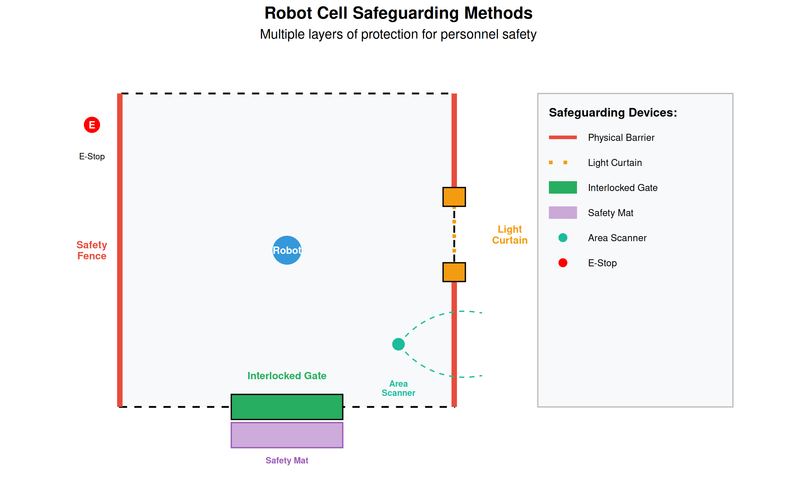
8.9 Collaborative Robots (Cobots)
Collaborative robots are designed to work safely alongside humans without traditional guarding.
8.9.1 Cobot Characteristics
| Traditional Industrial Robot | Collaborative Robot | |
|---|---|---|
| Safety Approach | Safeguarded cell; humans excluded | Inherently safe; force/speed limited |
| Payload | Up to 2300 kg | Typically 3-35 kg |
| Speed | Very high (>2 m/s) | Limited (<1.5 m/s typically) |
| Reach | Up to 4 m | 500-1300 mm typical |
| Programming | Specialized programmers | Intuitive; hand guiding |
| Guarding | Required (fences, curtains) | Often not required |
| Investment | High ($50K-500K+ with cell) | Lower ($25K-75K typical) |
| Applications | High-volume, dedicated tasks | Flexible, shared workspace |
8.9.2 Collaborative Operation Modes (ISO/TS 15066)
| Collaboration Mode | Description | Application | Requirements |
|---|---|---|---|
| Safety-Rated Monitored Stop | Robot stops when human enters collaborative zone; resumes when clear | Loading/unloading where human enters occasionally | Safety-rated sensors; safe zone definition |
| Hand Guiding | Operator physically guides robot; robot follows input forces | Teaching positions; flexible positioning tasks | Emergency stop; safe torque control |
| Speed and Separation Monitoring | Robot adjusts speed based on distance to human; stops if too close | Shared workspace with variable human presence | Distance sensing; certified safety functions |
| Power and Force Limiting | Robot limits force/pressure on contact to safe levels | Direct human-robot collaboration; assembly assist | Compliant design; verified force limits |
8.9.3 Force and Pressure Limits
ISO/TS 15066 specifies maximum contact forces and pressures for different body areas:
| Body Area | Max Pressure (N/cm²) | Quasi-Static Pressure | Max Force (N) | Quasi-Static Force |
|---|---|---|---|---|
| Skull/Forehead | 130 | 130 | 130 | 130 |
| Face | 65 | 65 | 65 | 65 |
| Neck (front/back) | 145 | 145 | 150 | 150 |
| Chest | 140 | 140 | 140 | 140 |
| Abdomen | 110 | 110 | 110 | 110 |
| Hand/Finger | 280 | 280 | 140 | 140 |
| Arm | 190 | 190 | 150 | 150 |
| Leg | 220 | 220 | 220 | 220 |
8.10 Robot Programming Basics
8.10.1 Programming Methods
| Method | Description | Advantages | Disadvantages |
|---|---|---|---|
| Online/Teach Pendant | Use teach pendant to jog robot to positions and record | Direct; precise; see actual positions | Production downtime; time-consuming for complex paths |
| Lead-Through/Hand Guiding | Physically move robot arm to desired positions | Intuitive; fast for simple paths; no programming skill needed | Limited to cobot-style robots; not precise |
| Offline Programming | Create programs on PC without robot; download later | No production downtime; complex paths; optimization | Requires accurate cell model; calibration needed |
| Simulation-Based | Program and test in virtual environment; transfer to real robot | Risk-free testing; cycle time estimation; collision checking | Model accuracy critical; license costs |
8.10.2 Basic Program Structure
Example Robot Program (ABB RAPID-style pseudocode):────────────────────────────────────────────────────
PROGRAM Main()
! Initialize
HomePosition()
GripperOpen()
! Main cycle
WHILE running DO
! Move to pick position
MoveJ pApproach, v500, z50, tool1
MoveL pPick, v100, fine, tool1
! Pick part
GripperClose()
WaitTime 0.2
! Move to place position
MoveL pApproach, v200, z50, tool1
MoveJ pPlaceApproach, v500, z50, tool1
MoveL pPlace, v100, fine, tool1
! Place part
GripperOpen()
WaitTime 0.2
! Return
MoveL pPlaceApproach, v200, z50, tool1
! Increment counter
PartCount := PartCount + 1
ENDWHILE
ENDPROGRAM8.10.3 Key Programming Concepts
| Concept | Description | Example |
|---|---|---|
| Position/Target | Stored robot position (joint angles or Cartesian coordinates) | pHome, pPick, pPlace |
| Motion Instruction | Command to move robot (MoveJ, MoveL, MoveC) | MoveL pTarget, v100, fine, tool1 |
| Speed Data | Velocity parameter (mm/s for TCP, % for joints) | v100 = 100 mm/s, v500 = 500 mm/s |
| Zone Data | Corner path blending (fine = stop at point, z10 = 10mm blend) | fine = stop, z5 = 5mm radius blend |
| Tool Data | Definition of tool center point relative to flange | tool1 with TCP offset [0, 0, 150, 0, 0, 0] |
| Work Object | Definition of work coordinate system for part positions | wobj_fixture with base offset |
| I/O Commands | Control external devices (SetDO, WaitDI, etc.) | SetDO doGripper, 1; WaitDI diPartPresent, 1 |
8.11 Video Resources
8.11.1 Introduction to Industrial Robots
8.11.2 Collaborative Robots Explained
8.12 Summary
Industrial robotics is a fundamental technology in modern manufacturing:
- Robot types include articulated (most versatile), SCARA (fast assembly), delta (high-speed picking), and cartesian (large work areas)
- Key specifications include payload, reach, repeatability, speed, and degrees of freedom
- System components work together: manipulator, controller, teach pendant, end effector, and safety system
- Coordinate systems (world, tool, user) enable flexible programming and positioning
- Applications span automotive, food & beverage, and aerospace with industry-specific requirements
- Safety requires comprehensive risk assessment and appropriate safeguarding
- Collaborative robots enable human-robot cooperation with force/speed limiting
- Programming can be online (teach pendant), lead-through, or offline
8.13 Review Questions
Question 1: Compare articulated (6-axis) robots, SCARA robots, and delta robots. For each, describe the typical applications and key advantages.
Answer:
| Robot Type | Configuration | Key Advantages | Typical Applications |
|---|---|---|---|
| 6-Axis Articulated | 6 revolute joints; human-like arm | Maximum flexibility; can reach any orientation; large payload range | Welding, painting, assembly, material handling, machine tending |
| SCARA | 4 axes; selective compliance | Very fast horizontal motion; rigid vertical; compact; precise | Pick-and-place, assembly, screw driving, packaging |
| Delta (Parallel) | 3-4 axes; parallel linkage | Extremely fast (150+ picks/min); low moving mass | High-speed picking, packaging, sorting, light assembly |
Detailed Comparison:
6-Axis Articulated: - Most versatile - can position tool at any angle - Wide payload range (3 kg to 2300+ kg) - Can reach around obstacles - Complex programming possible - Best for: Tasks requiring complex orientations, welding seams, painting
SCARA: - Inherently rigid in Z (vertical) - good for insertion - Very fast in X-Y plane - Lower cost than 6-axis - Compact footprint - Best for: Assembly operations, circuit board population, packaging
Delta: - Highest speed of any configuration - Low inertia (motors at base, not moving) - Limited payload (typically <15 kg) - Requires overhead mounting - Best for: High-speed sorting, packaging lines, food handlingQuestion 2: A robot has a maximum payload of 15 kg. The gripper weighs 4 kg and the part weighs 8 kg. Is this robot suitable? What other factors should be considered?
Answer:
Initial Assessment:
Total load = Gripper weight + Part weight
Total load = 4 kg + 8 kg = 12 kg
Robot capacity: 15 kg
Load: 12 kg
Remaining margin: 3 kg (20%)Consideration with Safety Factor:
Typical safety factor: 1.2 - 1.5
Required capacity = 12 kg × 1.25 = 15 kg
This equals the robot's maximum capacity - marginal!Additional Factors to Consider:
- Moment Load (Torque at Wrist)
- Distance from flange to center of gravity matters
- If part is held 300mm from flange: Moment = 8 kg × 0.3 m = 2.4 kg·m
- Robot specs include moment limits - must verify
- Inertia
- Fast motion requires acceleration
- Higher mass + longer distance = higher inertia
- May need to derate payload for high-speed applications
- Payload Derating with Reach
- Many robots derate payload at extended reach
- 15 kg at 500mm may become 10 kg at 1500mm
- Check payload diagram in robot specifications
- Orientation
- Payload may vary with wrist orientation
- Horizontal reach vs. vertical lift differ
- Acceleration Requirements
- Higher acceleration = higher effective load
- May need to reduce speed/acceleration
Question 3: Explain the difference between repeatability and accuracy. Why is repeatability often more important than accuracy for robot applications?
Answer:
Definitions:
Repeatability: - Ability to return to the same taught position multiple times - Measures consistency/precision of motion - Quoted as ± value (e.g., ±0.05 mm at 3σ) - Affected by: mechanical wear, servo control, thermal effects
Accuracy: - Ability to reach a commanded position exactly - Measures how close actual position is to theoretical position - Typically worse than repeatability (e.g., ±0.5 mm) - Affected by: manufacturing tolerances, calibration, deflection, backlash
Why Repeatability is Usually More Important:
- Teaching Method
- Most robots are programmed by teaching (jogging to positions)
- Robot doesn’t need to know where it “should” be - just return to where it was taught
- As long as it returns consistently (repeatability), accuracy doesn’t matter
- Process Requirements
- Welding: Need to follow same seam every time → repeatability
- Assembly: Need to insert part in same hole every time → repeatability
- Pick-place: Need to pick from same fixture position → repeatability
- Compensation Possible
- Poor accuracy can be compensated by adjusting taught points
- Poor repeatability cannot be compensated
When Accuracy Matters:
- Offline Programming
- Positions calculated from CAD data, not taught
- Robot must go where commanded, first time
- Common in aerospace (large parts, tight access)
- Multi-Robot Systems
- Robots must agree on positions
- Calibration to common frame requires accuracy
- Frequent Program Changes
- If programs are frequently changed without re-teaching
- Offline modifications need accurate execution
Question 4: Describe the four collaborative operation modes defined in ISO/TS 15066. Give an example application for each.
Answer:
1. Safety-Rated Monitored Stop
Description: Robot operates at normal speed when workspace is clear. When a person enters the collaborative zone, the robot stops and holds position. Robot resumes automatically when person exits.
Technical Requirements: - Safety-rated sensors (light curtains, scanners) - Safety-rated monitored stop function - Clearly defined collaborative zone
Example Application: Machine tending cell where operator occasionally loads raw material. Robot works at full speed during machining cycle but stops safely when operator enters to load/unload.
2. Hand Guiding
Description: Operator physically contacts the robot through a hand guiding device and manually moves it. Robot follows operator’s force input.
Technical Requirements: - Hand guiding device (force/torque sensing) - Emergency stop accessible at guiding device - Speed reduction while guiding - Safe torque control
Example Application: Teaching a paint path on an aerospace component. Operator guides robot along surface contour while robot records positions. Also used for “collaborative finishing” where operator guides robot holding a polishing tool.
3. Speed and Separation Monitoring
Description: Robot continuously monitors distance to the nearest person. Speed adjusts based on separation: full speed when far, reduced speed when closer, stop if minimum distance breached.
Technical Requirements: - Safety-rated distance monitoring (usually area scanners) - Safety-rated speed control - Multiple speed/distance zones defined - Real-time separation calculation
Example Application: Shared packaging area where robot palletizes cases while operator moves around the cell. Robot slows when operator approaches, stops if too close, and resumes at appropriate speed as operator moves away.
4. Power and Force Limiting
Description: Robot is designed so that forces and pressures from any contact are below injury thresholds. Contact is allowed because it cannot cause harm.
Technical Requirements: - Inherently safe design (compliant joints, low mass, rounded surfaces) - Force/torque sensing or current monitoring - Verified force limits per ISO/TS 15066 body area tables - May include padding/soft covers
Example Application: Assembly assist where robot holds a heavy part while human worker installs fasteners. Robot and human are in direct contact, with robot providing position support and human providing dexterity. Force is limited so accidental contact causes no injury.Question 5: Calculate the required gripper force for a robot picking a 2 kg part with a friction coefficient of 0.4. The robot accelerates at 10 m/s². Use a safety factor of 2.0.
Answer:
# Given values
mass <- 2.0 # kg
acceleration <- 10 # m/s²
gravity <- 9.81 # m/s²
friction_coef <- 0.4 # Coefficient of friction
safety_factor <- 2.0 # Safety factor
# Calculate forces
# Weight force (vertical)
F_gravity <- mass * gravity
# Inertia force (from acceleration)
F_inertia <- mass * acceleration
# Combined force (vector sum for worst case)
# Worst case: acceleration horizontal while holding against gravity
F_combined <- sqrt(F_gravity^2 + F_inertia^2)
# Required friction force to hold part
# F_friction = μ × F_normal
# F_normal = Grip force
# F_friction must overcome F_combined
# Without safety factor:
F_grip_min <- F_combined / friction_coef
# With safety factor:
F_grip_required <- F_grip_min * safety_factor
cat("Gripper Force Calculation:\n")Gripper Force Calculation:cat("═══════════════════════════════════════\n\n")═══════════════════════════════════════cat("Input Parameters:\n")Input Parameters:cat(" Part mass:", mass, "kg\n") Part mass: 2 kgcat(" Robot acceleration:", acceleration, "m/s²\n") Robot acceleration: 10 m/s²cat(" Friction coefficient:", friction_coef, "\n") Friction coefficient: 0.4 cat(" Safety factor:", safety_factor, "\n\n") Safety factor: 2 cat("Force Analysis:\n")Force Analysis:cat(" Gravity force: F_g = m × g =", mass, "×", gravity, "=",
round(F_gravity, 1), "N\n") Gravity force: F_g = m × g = 2 × 9.81 = 19.6 Ncat(" Inertia force: F_i = m × a =", mass, "×", acceleration, "=",
round(F_inertia, 1), "N\n") Inertia force: F_i = m × a = 2 × 10 = 20 Ncat(" Combined force: F_c = √(F_g² + F_i²) =", round(F_combined, 1), "N\n\n") Combined force: F_c = √(F_g² + F_i²) = 28 Ncat("Grip Force Calculation:\n")Grip Force Calculation:cat(" F_friction = μ × F_grip ≥ F_combined\n") F_friction = μ × F_grip ≥ F_combinedcat(" F_grip ≥ F_combined / μ =", round(F_combined, 1), "/", friction_coef,
"=", round(F_grip_min, 1), "N\n") F_grip ≥ F_combined / μ = 28 / 0.4 = 70 Ncat(" With safety factor:", round(F_grip_min, 1), "×", safety_factor,
"=", round(F_grip_required, 1), "N\n\n") With safety factor: 70 × 2 = 140.1 Ncat("═══════════════════════════════════════\n")═══════════════════════════════════════cat("REQUIRED GRIPPER FORCE:", ceiling(F_grip_required), "N minimum\n")REQUIRED GRIPPER FORCE: 141 N minimumcat("Select gripper rated for ≥", ceiling(F_grip_required/10)*10, "N\n")Select gripper rated for ≥ 150 NQuestion 6: List and describe five safety devices used to protect personnel around industrial robots.
Answer:
1. Physical Barriers (Safety Fencing)
Description: Fixed guards or fencing that physically prevent access to the robot work envelope.
Characteristics: - Rigid construction (steel, aluminum, polycarbonate) - Must withstand expected impact forces - Minimum height (typically ≥1.8 m) - Properly anchored to floor - May include interlocked gates for authorized entry
Application: Primary safeguard for most traditional robot cells.
2. Light Curtains (AOPD - Active Opto-electronic Protective Device)
Description: Transmitter and receiver create a sensing field of infrared beams. Breaking any beam triggers a stop.
Characteristics: - Type 2 or Type 4 (safety-rated) - Resolution (14mm for finger, 40mm for hand/arm) - Muting capability for material transfer - Very fast response (<20ms)
Application: Access points where frequent entry needed; allows material flow while protecting personnel.
3. Safety Mats (Pressure-Sensitive Mats)
Description: Floor mats that detect weight/pressure and trigger stop when stepped on.
Characteristics: - Placed in hazardous zones - Withstand industrial environment (oil, debris) - Fast response - Self-monitoring for failures
Application: Areas where overhead detection isn’t practical; around robot bases.
4. Area Scanners (Safety Laser Scanners)
Description: Laser scanner detects objects/personnel entering defined zones. Multiple warning and stop zones configurable.
Characteristics: - 270° field of view typical - Multiple programmable zones - Warning zone (slow robot) and stop zone (stop robot) - Type 3 safety rating - Detects at floor level
Application: Open cells requiring flexibility; mobile robot protection; speed/separation monitoring.
5. Interlocked Gates/Doors
Description: Access gates with safety switches that stop robot when opened.
Characteristics: - Mechanical or magnetic interlock switches - Trapped key systems for lockout - May include guard locking (prevent opening while robot moving) - Escape release from inside - Meets ISO 14119
Application: Authorized entry points for maintenance, setup, troubleshooting.
Additional Devices:
- E-Stop (Emergency Stop): Palm-operated buttons to immediately stop robot
- Two-Hand Controls: Require both hands on buttons to initiate motion
- Enabling Devices: 3-position switches held by personnel in restricted area
- Presence-Sensing Devices: Capacitive, radar, or vision-based detection
Question 7: Explain the difference between MoveJ (Joint Move) and MoveL (Linear Move). When would you use each?
Answer:
MoveJ (Joint Move)
How It Works: - Each joint moves from start to end angle independently - All joints start and stop together (coordinated) - Path of TCP (Tool Center Point) is unpredictable - curved - Robot calculates joint interpolation, not TCP path
Characteristics: - Fastest point-to-point motion - No singularity issues during move - Path may vary depending on starting configuration - Speed specified in % of max or joint velocity (°/s)
When to Use: - Moving between distant points through free space - Approach movements before precise positioning - Home position moves - Any time when path doesn’t matter, only endpoints - Escaping from near-singularity positions
MoveL (Linear Move)
How It Works: - TCP follows a straight line from start to end - Robot calculates joint positions to maintain linear TCP path - Orientation is interpolated linearly as well - All axes coordinated to produce straight line
Characteristics: - Guaranteed straight path - Consistent, predictable motion - Slower than MoveJ for same endpoint distance - Can encounter singularities during move - Speed specified in mm/s at TCP
When to Use: - Process paths (welding, sealing, cutting) - Insertion/extraction operations - Approach to pick/place positions - Any time path must be straight - When moving close to obstacles
Practical Example:
Imagine picking a part from a fixture:
! Move from home to near pick position - path doesn't matter
MoveJ pApproach, v1000, z50, tool1 ! Joint move - fast
! Move down to pick - must be straight to avoid collision
MoveL pPick, v100, fine, tool1 ! Linear move - controlled
! Pick part, then retract straight up
GripperClose()
MoveL pApproach, v200, z10, tool1 ! Linear move - straight up
! Move to place area - through open space
MoveJ pPlaceApproach, v1000, z50, tool1 ! Joint move - fastQuestion 8: A manufacturing engineer needs to select a robot for a palletizing application. The requirements are: 25 kg payload, 2.2 m horizontal reach, 10 cycles per minute, floor-mounted. Recommend a robot type and justify your selection.
Answer:
Application Analysis:
| Requirement | Value | Implication |
|---|---|---|
| Payload | 25 kg | Medium-heavy; rules out delta and most SCARA |
| Reach | 2.2 m | Large work envelope needed |
| Cycle rate | 10/min | 6 seconds/cycle; moderate speed |
| Mounting | Floor | Typical industrial installation |
| Motion type | Palletizing | Mainly vertical and horizontal; some rotation |
Robot Type Evaluation:
1. 4-Axis Palletizing Robot (RECOMMENDED) - Specifically designed for palletizing - 4 axes: base rotation, arm, elbow, wrist - High payload capability (25-700+ kg available) - Long reach available (up to 3.2m) - Fast for palletizing motions - Lower cost than 6-axis - Examples: FANUC M-410iC, KUKA KR QUANTEC PA, ABB IRB 460
Verdict: Excellent match for this application
2. 6-Axis Articulated Robot - Maximum flexibility - Can handle complex pallet patterns - Higher cost than 4-axis for same payload - May be over-specified for simple palletizing - Examples: FANUC M-710iC/50, ABB IRB 6700
Verdict: Capable but potentially over-specified and more expensive
3. Cartesian/Gantry Robot - Can cover very large areas - Simple motion control - Higher installation complexity - Less common for palletizing applications
Verdict: Possible but not ideal for this payload/cycle rate
Recommended Selection:
FANUC M-410iC/185 or similar 4-axis palletizer - Payload: 185 kg (well above 25 kg requirement with margin for gripper) - Reach: 3.143 m (exceeds 2.2 m requirement) - Repeatability: ±0.5 mm - Axes: 4
Justification: 1. Purpose-built: Designed specifically for palletizing 2. Adequate payload: 185 kg allows for heavy gripper + multiple parts 3. Reach: 3.1 m provides margin for future needs 4. Speed: Optimized kinematics for palletizing motion profile 5. Reliability: Proven in thousands of palletizing applications 6. Cost: Lower than equivalent 6-axis robot 7. Simplicity: 4 axes easier to program and maintain than 6
Additional Recommendations: - Vacuum or mechanical gripper depending on product - Vision system for product detection if variety exists - Safety scanner for operator access during pallet changes - Interface to conveyor for product delivery8.14 References
Siciliano, B., & Khatib, O. (Eds.). (2016). Springer Handbook of Robotics (2nd ed.). Springer.
ISO 10218-1:2011. Robots and Robotic Devices - Safety Requirements for Industrial Robots - Part 1: Robots.
ISO 10218-2:2011. Robots and Robotic Devices - Safety Requirements for Industrial Robots - Part 2: Robot Systems and Integration.
ISO/TS 15066:2016. Robots and Robotic Devices - Collaborative Robots.
International Federation of Robotics. (2023). World Robotics Report. IFR.
Niku, S.B. (2020). Introduction to Robotics: Analysis, Control, Applications (3rd ed.). Wiley.
Craig, J.J. (2018). Introduction to Robotics: Mechanics and Control (4th ed.). Pearson.
FANUC Corporation. (2023). Robot Technical Manuals. FANUC.
ABB Robotics. (2023). Technical Reference Manual - RAPID Instructions. ABB.
Robotic Industries Association. (2023). ANSI/RIA R15.06-2012: Industrial Robots and Robot Systems - Safety Requirements. RIA.